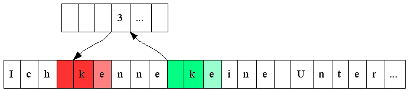

| Version | 2 |
| Author | Pavel Studený, Ondřej Holeček, Opera Software ASA |
| Date | 2008-01-17 |
| This Version | http://www.unicode.org/notes/tn31/tn31-2.html |
| Previous Version | http://www.unicode.org/notes/tn31/tn31-1.html |
| Latest Version | http://www.unicode.org/notes/tn31/ |
Compression algorithms derived from Lempel-Ziv operate on 8 bit data. This article shows a window-less compression algorithm specialized on 16 bit Unicode characters, which achieves significantly better performance than for example current zip implementations and has a reasonable compression ratio.
This document is a Unicode Technical Note. Sole responsibility for its contents rests with the author(s). Publication does not imply any endorsement by the Unicode Consortium. This document is not subject to the Unicode Patent Policy.
For information on Unicode Technical Notes including criteria for acceptance, see http://www.unicode.org/notes/.
Lempel-Ziv compression[1] is based on replacing sequences of bytes by references to matching sequences already processed by the encoder. The references are called matches. The data which don't have any matches are left unmodified. Those are called literals. See Fig. 1[4] as an example.
Eli, Eli, lamah azavtani?
Eli, [5,5]lamah azavtani?
Fig. 1: “Eli, “ appears twice in the text. We can thus replace the second reference by a match saying “take the sequence 5 characters before and 5 characters long”. The other character sequences appear once in the text. Those are unmodified in the compressed data as literals.
There are various modifications of Lempel-Ziv algorithm, differing in methods of finding the matches and how to store them in the compressed output. In LZ77, there is a sliding window holding the last 2, 4 or 32 kB of input. There is also a dictionary in most of the compression methods, serving as an index to find the matches quickly.
A few adjustments can be done if the input is an in-memory block of 16 bit Unicode characters. First of all, the input can be considered as a series of true 16 bit units, instead of arbitrary 8 bit data. There is also no need for a sliding window, since all the data is already present in memory.
The dictionary is organized as a hash table. The hash is made from two consecutive 16 bit characters. It serves as an index to an array of pointers to the previous occurrences of the couple of characters in the text. No effort is made to find the longest match or to avoid conflicts in hashes. It results in a worse compression ratio, but much better performance. The characters found by the hash are simply compared to find the length of the match and the hash is then updated to point to the current location. Fig. 2[5] shows finding a match in the dictionary.

Fig. 2: We get to the position of the previous occurrence by hashing ' ' and 'k' and looking up the pointer in the dictionary.
Since the method of looking up the match is fairly simple, there is quite a lot of literals left in the output. Further effort is done to reduce the size of the literals as well. The vast majority of texts uses mainly one alphabet/script. The character values of a script in the Unicode table are close together. That's why it's possible to store differences between two 2 byte characters as a single byte signed value of a range of <-64, 63>. If the difference between the two characters doesn't fit into the range, the extra bits are stored in the subsequent byte. That gives a range of <-8192, 8191>. Three bytes are used in rare cases, when it's necessary to store the highest bits of the difference as well. The most significant bit of the bytes is used to mark whether the next byte holds the extra bits of the current value or the next difference. Only the first character of a literal is stored directly, so that we can restore the original values from the differences.
A0041,002C 0020Σ03A3
0041 15 0C FD 78
Fig. 3: Encoding of literal “A, Σ”. 'A' is stored straight as 41 (on 2 bytes).Then we store ',' as 41 – 2C = 15 and space as 2C – 20 = C. Σ doesn't fit to a single byte, because 20 – 3A3 = FC7D. It's lowest 7 bits (7D) are stored in the first byte with its most significant bit set to 1, signalling that the next byte holds the next bits. The next 7 bits of FC7D (78) are stored in the next byte and its most significant bit is left as zero.
Output consists of either literals of a certain length or matches. A match is a pair of a length and an offset. To distinguish between literals and matches, we can use one bit from the length field of both literals and matches. Also both offset and length of a match and length of a literal can be encoded in a similar way as the differences between characters in literals – one bit saying whether there are more data and the rest of the byte filled by the value.
|
|
|
|
|
|
|
|
|
Fig. 4: The most significant bit in the length field is used to distinguish between a match and a literal, the second most significant bit says whether the length fits into the remaining 6 bits and the rest holds the lowest 6 bits of the length. If the length doesn't fit into the 6 bits, another byte (or more) is used to store the rest. Then the most significant bit says whether the next byte also holds a part of the length and 7 bits contain another portion of length.
It's also convenient to store the original length of uncompressed data for decompression.
First of all it's necessary to allocate an output buffer and a dictionary. Output buffer should be 50% bigger than the input data. Size of the dictionary depends on a programmer's choice. The more memory the dictionary uses, the better compression ratio can be reached. The dictionary used for this article holds 16384 pointers, that's 64KB on a 32-bit machine.
The smallest size of a match is sixteen bits (1B length and 1B offset). The size of the data replaced by a match must therefore be greater than sixteen bits in order to reach any compression. That's two Unicode characters (32 bits) in this case. These two characters must be hashed to make up an index to the dictionary. An example of a hash is shown in Fig. 5.
int hash(int char0, int char1)
{
return ((char1 * 37 ^ ((char0 >> 7) * 5) ^ (char0)) * 33) & 16383;
}
Fig. 5: Hash makes a number ranging from 0 to 16383. Several character combinations share the same hash value. It's important that the character values making the same hash are evenly distributed.
A simplified compression is in Fig. 6. OutputMatch is straightforward, just writing the length and the offset to the output in the format explained above. OutputLiteral is covered in details are in Fig. 7.
literal = input;
while (length-- > 0) {
match_index = hash(*input, *(input + 1));
match = dictionary[match_index];
dictionary[match_index] = input;
if (valid_pointer(match) && *match == *input && *(match + 1) == *(input + 1)) {
if (literal < input)
OutputLiteral(literal, input - literal);
i = 2;
while (*(match + i) == *(input + i))
++i;
OutputMatch(input - match, i);
input += i;
literal = input;
length -= (i - 1);
}
else
++input;
}
if (literal < input)
OutputLiteral(literal, input - literal);
Fig. 6: Whenever a match is found, the not-matched part of data is sent to output, followed by the match.
// most significant bit is 0 to mark a literal
*(output++) = (unsigned char)(length & 0x3F) | ((length > 0x3F) << 6);
length >>= 6;
while (length > 0) {
*(output++) = (unsigned char)(length & 0x7F) | ((length > 0x7F) << 7);
length >>= 7;
}
// save the first Unicode character
previous = *input++;
*output++ = previous & 0xFF;
*output++ = previous >> 8;
// save differences between the characters
while (length-- > 0) {
diff = previous - *input;
if ((diff & 0xFFFFFFC0) == 0 || (diff | 0x3F) == -1)
*output++ = (unsigned char)(diff & 0x7F);
else {
*output++ = (unsigned char)((diff & 0x7F) | 0x80);
diff >>= 7;
if ((diff & 0xFFFFFFC0) == 0 || (diff | 0x3F) == -1)
*output++ = (unsigned char)(diff & 0x7F);
else {
*output++ = (unsigned char)((diff & 0x7F) | 0x80);
*output++ = diff >> 7;
}
}
previous = *input++;
}
Fig. 7 (OutputLiteral): The length is saved first on as many bytes as needed. Then follows the first character of the literal (two bytes). After that, differences from the previous character are saved on one, two or three bytes.
Decompression is straightforward and simple. There is no need to allocate any memory except a buffer to store the decompressed data.
The most significant bit of a strip of data says whether it's a match or a literal. Literals are encoded from the differential code to the output buffer. Since a literal is always the first strip of the compressed data and a match can only reference backwards, the matches are copied from the previous data in the output buffer.
while (input < end) {
if (*input & 0x80) { // match
length = DecodeLength(&input);
offset = DecodeOffset(&input); // same algorithm as DecodeLength
while (length-- > 0)
{
*output = *(output - offset);
++output;
}
}
else { // literal
length = DecodeLength(&input);
*output = *input++;
*output++ |= ((unsigned int)(*input++)) << 8;
--length;
while (length-- > 0) {
c = *input & 0x7F;
if (*input++ & 0x80) { // two bytes
c |= ((unsigned int)*input & 0x7F) << 7;
if (*input++ & 0x80) { // three bytes
c |= *input++ << 14;
if (c & 0x10000) // negative number
c |= 0xFFFF0000;
}
else if (c & 0x2000) // negative number
c |= 0xFFFFC000;
}
else if (c & 0x40) // negative number
c |= 0xFFFFFF80;
*output = *(output - 1) - c;
++output;
}
}
}
Fig. 8: When decoding a literal, the differences between
the characters might be either positive or negative. We must fill the top bits
by 1 for negative numbers. The code here assumes that c is a 32 bit
integer.
DecodeLength and DecodeOffset just keeps adding
7 bits to the resulting length value as long as the most significant bit of
the byte on input is set.
This algorithm is more than 10 times faster than standard zip compression[2], almost independently of a compression level used (1-9 and even 0 – no compression). The speed is the same as LZO[3], the worlds fastest compression algorithm. Text is usually compressed to 60% of its original size.
| Unicode compression | zlib, level 1 | zlib, level 9 | ||||
|---|---|---|---|---|---|---|
| compressed size [B] | time [µs] | compressed size [B] | time [µs] | compressed size [B] | time [µs] | |
| English (1014 B) | 560 | 0.18 | 405 | 2.8 | 377 | 3.2 |
| Russian (982 B) | 618 | 0.19 | 464 | 2.9 | 443 | 3.3 |
| Chinese (1018 B) | 841 | 0.23 | 726 | 3.8 | 719 | 3.8 |
The values in the table were measured on a machine with Pentium 4 / 3.4 GHz processor, compiler was Microsoft Visual C++ 6.0. The texts were parts of the “What is Unicode” pages from www.unicode.org
A sample source code in C is attached. It is subject to the Unicode Terms of Use. The purpose of the sample code is to explain details of the compression algorithm. Therefore it isn't optimized for speed as much as the code used for performance testing and aims to be easy to understand instead.
Copyright © 2008 Pavel Studený, Ondřej Holeček and Unicode, Inc. All Rights Reserved. The Unicode Consortium, Ondřej Holeček and Pavel Studený make no expressed or implied warranty of any kind, and assume no liability for errors or omissions. No liability is assumed for incidental and consequential damages in connection with or arising out of the use of the information or programs contained or accompanying this technical note. The Unicode Terms of Use apply.
Unicode and the Unicode logo are trademarks of Unicode, Inc.